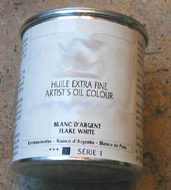

La
céruse
|
Longtemps unique
blanc couvrant disponible, la céruse,
produit toxique et polluant
notoire, est-elle abandonnée ?
Comme un gangster
recherché, elle a changé de nom plusieurs fois. "Céruse", "blanc de plomb",
"blanc de Saturne", "blanc d'argent" et "white lead" sont bien des carbonates de plomb (formule
basique C2H2O8Pb3,
formule neutre CO3Pb). Ils peuvent tuer, provoquer des
maladies, réagissent violemment à différents matériaux et se
décomposent à basse température (≈300-400°C)
en dégageant des fumées toxiques. Ce sont très probablement des produits
cancérigènes. Ils pourraient être responsables de déformations congénitales.
Leurs effets pathogènes, regroupés sous l'intitulé "saturnisme", sont de toute
façon nombreux et puissants, parfois sournois.
|
Sommaire
Fabrication, distribution,
qualités
-
La fabrication, les
qualités
-
Folie et conservatisme
-
La distribution
Particularités
techniques
Utilisations
1. Peinture
2. Arts du feu
3. Ebénisterie
|
Les procédés de
fabrication peuvent différer de même que les conditionnements, en pâte ou en
poudre. De nos jours, la céruse en poudre est surtout destinée aux arts du feu
(voir ci-dessous),
mais des peintres l'utilisent ainsi que quelques enseignants en peinture (un cas de ce type nous a été signalé dans un cours de peinture à
Mexico). Sous cette forme pulvérulente, l'emploi de céruse est particulièrement malsain.
Quels que soient leur
composition précise et leur conditionnement, la manipulation de ces produits nécessite un appareil respiratoire approprié.
De plus, en raison de leurs incompatibilités, leur stockage doit être
surveillé.

Lire l'article sur la toxicité
Autre lecture conseillée :
La
céruse sur Pourpre.com
Fabrication, distribution

La
fabrication, les qualités
Des lamelles de plomb sont dégradées à l'acide, anciennement au
vinaigre,
puis dans un milieu fermentant (fumier de cheval, ou tannée,
pendant plusieurs semaines) apportant le CO2, révélant finalement une
poudre blanche que l'on nomme "fleur de plomb". En fait, une première
combinaison produit de l'acétate de plomb (à cause du vinaigre), qui est
transformée en carbonate de
plomb dans un second temps sous l'action de l'acide carbonique.
Dans le domaine de la peinture artistique, la version chimiquement neutre de
la céruse, CO3Pb, serait préférable à la version basique C2H2O8Pb3,
moins pure. Dans le domaine des arts du feu, ce point ne semble pas avoir
tellement d'importance.
Le carbonate de plomb existe aussi à l'état naturel. De Smyrne (Izmir,
Turquie) à l'Iran, on s'est servi de cette ressource pour enduire les
coques des navires, bien avant l'invention du terme "peinture
antifouling".
Folie et conservatisme
En Égypte ancienne et en Mésopotamie, puis en Occident
de la Rome antique au XVIIIème
siècle,
ce produit, naturel ou manufacturé, a été utilisé en
cosmétique (fards) ! Il servait à
blanchir le teint et à effacer les petites rides. De fait, il avait deux
manières de blanchir le teint : par sa couleur propre et par la pâleur morbide
qu'il entraînait. Il pourrait ainsi avoir de
véritables fashion
victims à son actif.
Notons au passage que l'un des symptômes induits par l'intoxication à la
céruse est le bleuissement des gencives.
Enfin, des emplois en arts plastiques sont encore pratiqués
de nos jours. Ce produit est toujours en vente. Faut-il le redire ? Le carbonate de plomb est un
horrible poison et un polluant bien connu.
Et pourtant, même
Xavier de
Langlais, dont l'oeuvre écrite est admirable, mentionne un bien étrange "marouflage à la
céruse" (p. 103). Dans ce procédé, on rend la pâte de carbonate de
plomb «plus siccative par l'adjonction de 3%, en poids, de siccatif liquide
au plomb et manganèse et de 10% de vernis (du type "Colle d'or"
Lefranc, ou "Eburit")». Il est permis de se demander comment un
auteur aussi excellent pouvait donner au XXème siècle une telle recette dans laquelle l'oxyde de
plomb s'ajoute purement et simplement à l'oxyde de plomb - l'Eburit ® étant une
sorte de diluant adjoint des mêmes siccatifs métalliques - pour former rien
moins qu'une horrible sauce. Le poids des traditions aurait-il joué un rôle dans
ce qui pourrait sembler un contre-exemple exceptionnel de la pertinence
extraordinaire de son enseignement ?
La distribution
La céruse est toujours fabriquée par plusieurs entreprises proposant par
ailleurs des produits de grande qualité. Elle est distribuée par de grandes
enseignes en France. Les produits sont (en principe) pourvus de l'étiquette obligatoire - voir le
pictogramme ci-dessus - qui implique
légalement la consignation de chaque vente sur un livre d'apothicaire (voir toxicité).
Une obligation rarement respectée.
L'affirmation de
Kevin Mac
Cloud : "[ce produit est] aujourd'hui partout interdit, sauf dans les demeures historiques
(...)", ne s'applique pas en France. N'importe qui peut se procurer cette
substance : la loi n'interdit rien dans ce domaine, se
contentant d'obliger en théorie les détaillants, comme on vient de le dire, à
notifier les achats et les coordonnées des acheteurs.
Les acheteurs sont vraiment très, très rares mais attachés au produit
depuis longtemps. Le chiffre de vente est très faible, à tel point qu'il
est permis de s'interroger sur l'intérêt commercial de
continuer à distribuer ce poison.
Une variété un peu moins toxique a été distribuée dans le commerce
pendant un temps, le sulfate de plomb. Un mélange
tout aussi douteux qui a d'ailleurs
disparu, semble-t-il.
Particularités
techniques
Les céruses sont très grasses par elles-mêmes et peuvent être utilisées
sans liants additionnels : il suffit de les imbiber d'eau. Elles seraient
néanmoins incompatibles avec diverses peintures à l'eau (information non
vérifiée). Avec le temps, elles tendraient à devenir "crayeuses" et
réversibles (une information non confirmée mais plausible étant donné que les
peintures au plomb semblent attirer les enfants, victimes du saturnisme, qui retirent bien de la
matière en léchant tout simplement ces substances au goût de bonbon).
Elles seraient cependant d'excellents bouche-pores. Information
non confirmée.
Elles auraient la propriété de décolorer l'huile de lin. Cette combinaison ne
jaunirait pas. Il s'agit peut-être là d'une légende. N"hésitez pas à
nous contacter si vous disposez d'informations fiables à ce
sujet.
Elles sont incompatibles avec les acides
et réagissent violemment au contact de fluor (information
RepTox).
L'association de céruse avec des huiles cuites à la "litharge d'or" (en
fait, litharge de plomb, un gangster qui change de nom,
parmi tant d'autres), avec le
siccatif de Courtrai blanc ou tout médium siccatif au plomb est inutile, voire
déconseillée. Cette substance a évidemment en elle-même des propriétés
siccatives. Il est d'ailleurs possible d'exploiter celles-ci en en ajoutant une très
petite quantité à certaines couleurs (voir ci-dessous) pour accélérer leur siccativation.
Au Moyen-âge, bien avant la découverte des huiles à peindre,
on liait la céruse à l'oeuf et on la combinait sans
hésiter au minium, parfois au réalgar,
sans omettre d'ajouter "une miette de la cire qui se trouve dans les
oreilles de l'homme" (le cérumen). Sans commentaires.
La céruse servait d'adjuvant, dit-on, à de nombreux pigments que l'on
estimait sans éclat. Très souvent, on utilisait de tels mélanges en première
couche avant d'ajouter la couleur pure par-dessus. Avec un peu de distance,
notamment celle que nous a apporté le
blanc de titane, on peut
dire que tout pigment placé sur une surface blanche, lumineuse, prend de
l'éclat. Et donc que la céruse n'était pas un adjuvant.

Comme toute substance contenant du plomb, la céruse est
fortement incompatible avec les pigments et autres substances qui contiennent du soufre
libre.
Les céruses sont très couvrantes et d'un
blanc éclatant.
Elles sont extrêmement lourdes (comme du plomb !). C'est leur poids qui
aurait convaincu les maîtres vénitiens d'adjoindre de la cire dans leurs pâtes
pour stopper les coulées (médium
vénitien) - information douteuse : la présence de litharge
dans les jus à l'huile
noire pourrait aussi bien avoir motivé ces grands peintres.
Elles attaqueraient violemment le papier. Elles seraient
d'ailleurs utilisées dans l'industrie papetière pour provoquer des réactions.
Elles ne se combineraient que fort mal avec beaucoup de couleurs, sauf la
garance
qu'elles auraient tendance à fixer ainsi que les terres et les noirs (sans
garanties). Comme signalé ci-dessus, il est prudent d'éviter les associations avec les couleurs sulfurées
(noircissement radical, d'autant plus si le pigment est "mal lavé", encore trop
chargé de soufre libre). A proscrire dans ce type de cas : le
vermillon véritable, l'outremer, les
cadmiums,
le jaune de Naples, etc., mais aussi la plupart des bleus et des jaunes, le
vert
anglais et les pigments contenant de l'antimoine.
Utilisations
1. Peinture
En peinture, souvent utilisée dans la fabrication
des gessos, la céruse était mêlée de blancs naturels qui compensaient
son glissant, son poids et sa blancheur trop intense. Il fallait cependant lui adjoindre de
l'huile de lin en quantité suffisante pour éviter les réactions avec les
couches supérieures ou inférieures. Autant dire qu'il fallait un véritable
film isolant !
Quant à son utilisation dans le tableau proprement dit, elle ampute la palette
de très nombreuses couleurs à cause des risques d'interactions.
Les vertus de la céruse sont mises en échec par
les contraintes que son emploi induit.
Ce produit est dangereux pour
l'être humain et pour l'environnement. Il peut être remplacé avantageusement
- en peinture et en ébénisterie, par des pigments sans toxicité comme le blanc de
titane, très couvrant également,
- pour certains traitements des bois, par
différentes résines de
substitution ou, là aussi, par le blanc de titane associé à un liant
quelconque.
2. Arts du feu
Comme la plupart des produits employés dans ce domaine, c'est sous la forme d'une poudre très fine que se
présente la céruse. Elle constitue la source d'oxyde de plomb la plus employée.
En effet, le carbone qu'elle contient est éliminé lors de la cuisson,
facilitant semble-t-il la fusion à très basse température. Elle est encore fort utilisée comme fondant bien
que quelques oxydes métalliques commencent à la détrôner, sans parler des frittes
modernes au plomb, théoriquement non toxiques.
Il faut préciser que l'oxyde de plomb a réellement apporté des qualités
aux glaçures, émaux divers et verres comparativement aux différents autres
fondants. Son emploi avait une raison d'être, surtout dans le passé, lorsque la liste des substances disponibles
était plus restreinte et les températures de cuisson plus basses.
Nous déconseillons l'emploi de
céruse, surtout à l'état pulvérulent !!!
3. Ébénisterie
L'emploi ancien de céruse en ébénisterie se justifiait par la capacité
de cette substance à
boucher les pores du bois ou, on l'a vu, à protéger les
coques des navires. Mises à part quelques rares exceptions liée à des
contextes très particuliers, son utilisation a heureusement été abandonnée dans
ce secteur d'activités.
Retour
début de page